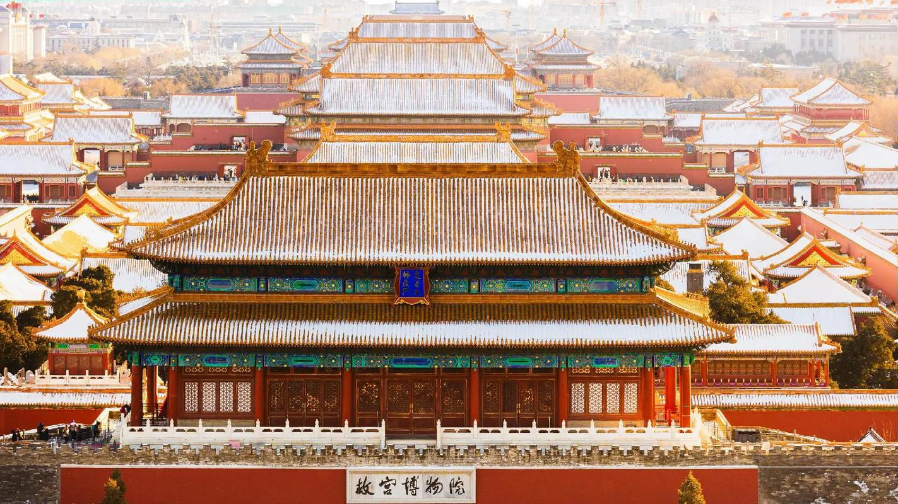
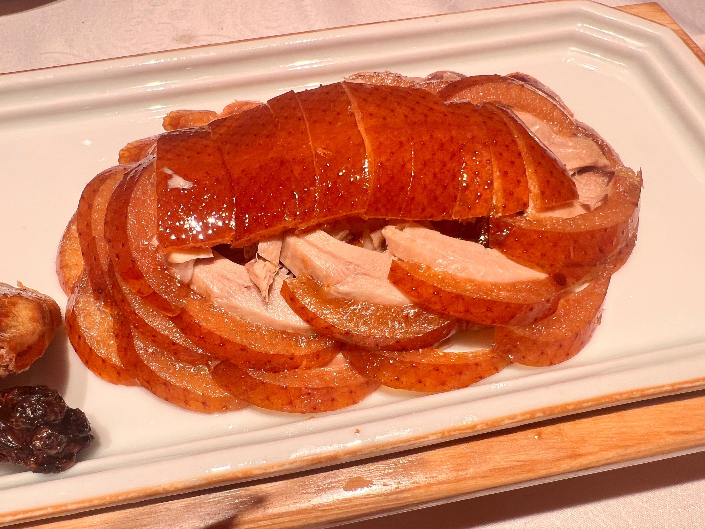
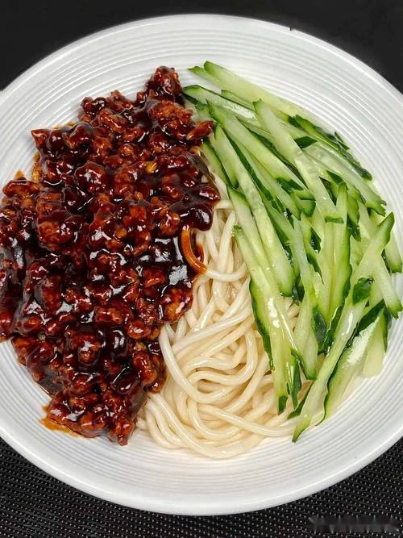
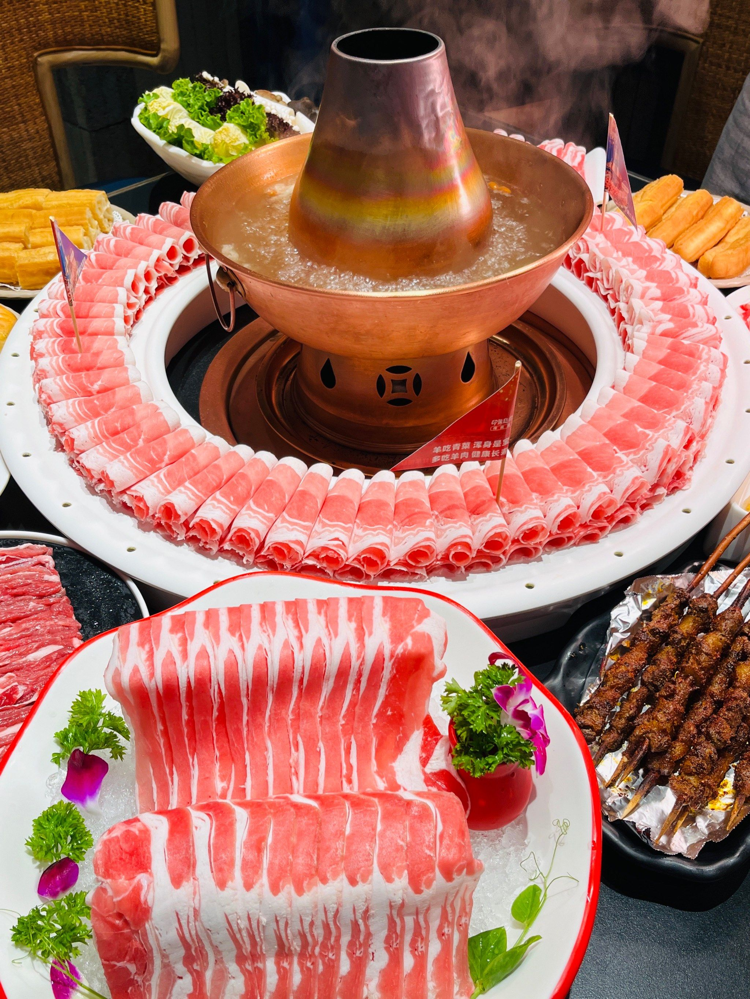
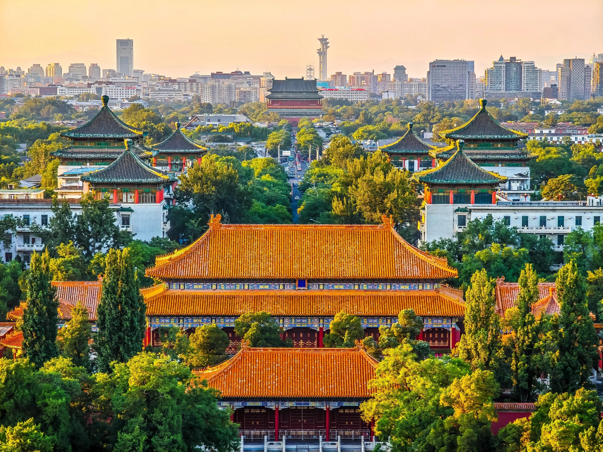
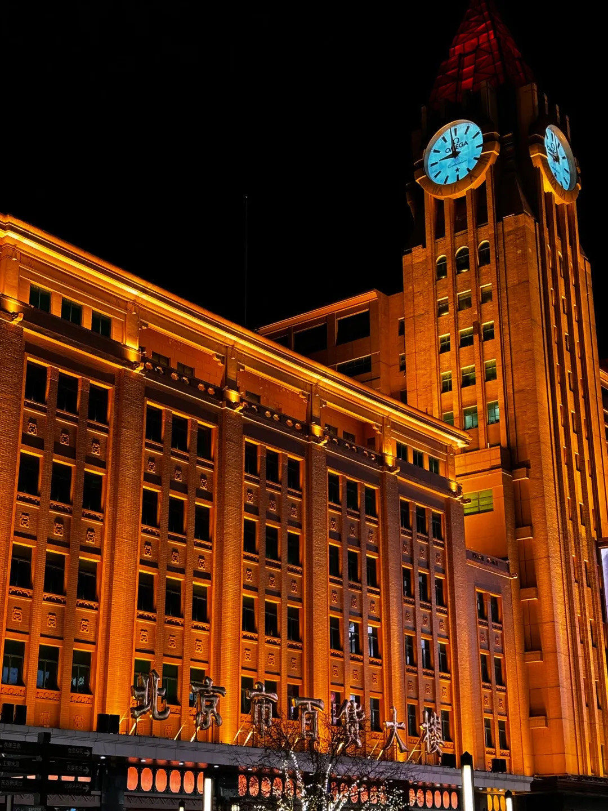
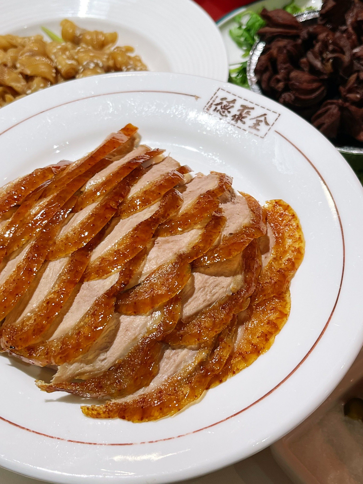
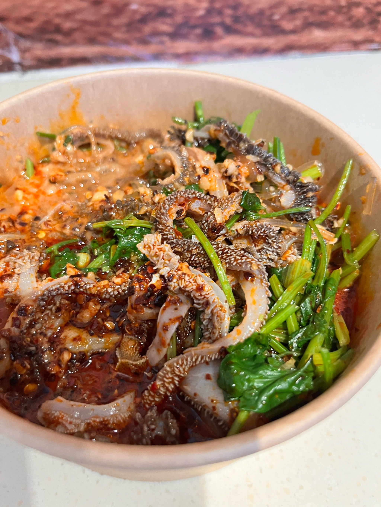

第一天：帝都皇城漫步

景
09:00 — 上午
景点
天安门广场
世界上最大的城市广场，五星红旗在晨曦中迎风飘扬，气势磅礴。五一期间花团锦簇，拍照留念的绝佳地点。无需购票，可自由参观，建议提前预约参观天安门城楼。
景
10:00 — 上午至下午

景点
故宫博物院（紫禁城）
世界上规模最大、保存最完整的古代宫殿建筑群。红墙黄瓦、雕梁画栋，每一步都是历史。五一人流较多，建议走"西路"（慈宁宫花园区域）相对清静，悠然欣赏。
食
12:30 — 午餐
🍜 午餐推荐 · 故宫附近

便宜坊烤鸭
创立于1416年，焖炉烤鸭鼻祖。皮酥肉嫩，搭配薄饼、黄瓜丝、甜面酱，滋味醇厚。

老北京炸酱面
地道北京味道，浓郁肉酱配上劲道面条，搭配黄瓜丝、豆芽、青豆，简单却回味无穷。

东来顺涮羊肉
百年老字号，手切羊肉片薄如纸。铜锅清汤，蘸料讲究，是地道的北京涮肉体验。
景
14:00 — 下午

景点
景山公园
紫禁城正后方的皇家御苑，登顶万春亭俯瞰故宫全景，是拍摄故宫最佳角度。五月丁香盛开，花香四溢，是放松散步的绝佳去处，节奏轻松，老少皆宜。
🚇
交通提示：景山公园 → 王府井，步行约20分钟，或乘地铁1号线（天安门东→王府井，1站），非常方便。五一期间建议以步行+地铁为主，避开地面拥堵。
景
16:00 — 傍晚

景点
王府井步行街 & 小吃街
北京最著名的商业街，全聚德烤鸭旗舰店坐镇，旁边的王府井小吃街汇聚老北京各类特色小吃。傍晚灯光亮起，人声鼎沸，氛围热闹而不失趣味，随走随吃最惬意。
食
18:30 — 晚餐
🦆 晚餐推荐 · 王府井周边

全聚德烤鸭（王府井店）
1864年创立，挂炉烤鸭金字招牌。片皮鸭色泽红润，皮脆肉滑，是北京必吃之选。建议提前预约。

王府井小吃街（随吃随走）
糖葫芦、爆肚、卤煮火烧、驴打滚……边走边吃，感受最市井的北京味道，晚餐可轻食形式进行。